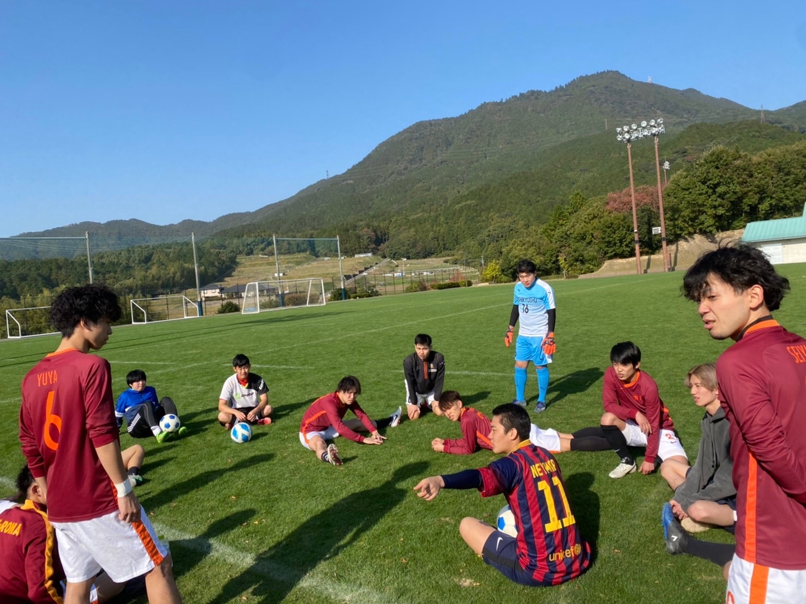
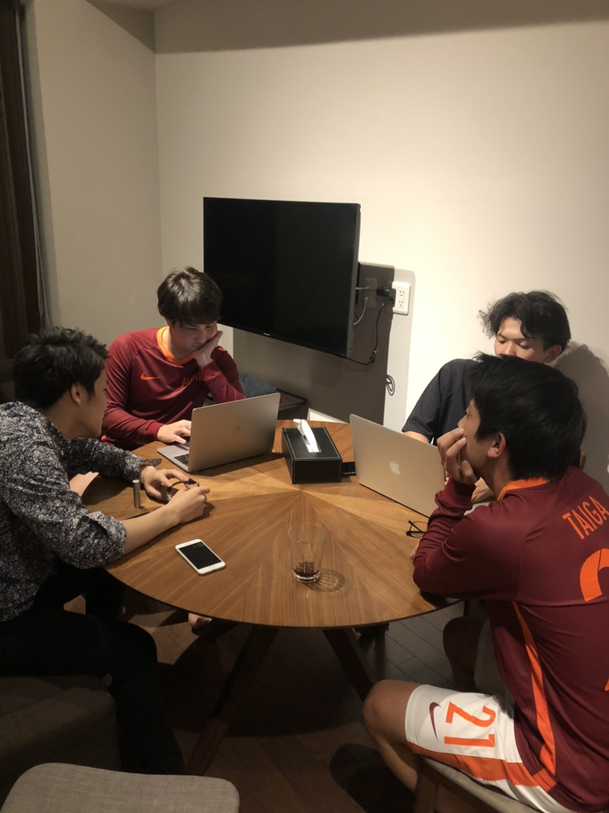
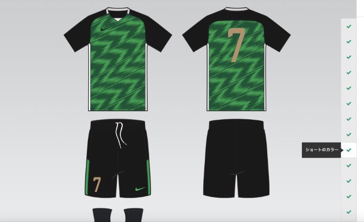

令和２年度、11月8日より練習試合をさせていただきました。
阿吽TBCとコヨーテ等で試合を回しましたが試合結果に関しては、
どのチームも勝ったり、負けたりして試合レベルは同等で、
選手の皆さんも楽しくサッカーを楽しんでいる様子でした!
ウィンターカップまで１ヶ月間しかありませんので、もう一度会議を
開いて細かい部分を決めましょう！！！

令和２年度、10月15日、阿吽TBCの今後の活動について、会議しました。
12月29日に毎年、阿吽で大会を開く「ウィンターカップ」を開くことに決まりました！
興味がある方は、ぜひ気軽に観戦してください！
賞金をかけて試合を行いますので、参加する際は参加費を徴収します！
また、11月8日に福岡のチームの「コヨーテ」との試合が決まり、
次第には県外のチームとの交流を深めていこうと思います！

令和２年度、9月に阿吽TBCのセカンドユニホームが決まりました！
ファーストユニホームに引き続きとても良いデザインですね！
12月末にあるTBCウィンターカップにはユニホームが届くと思います。
ウィンターカップの詳細に付いてはまた近々報告します！
ぜひ気軽に見に来てください！